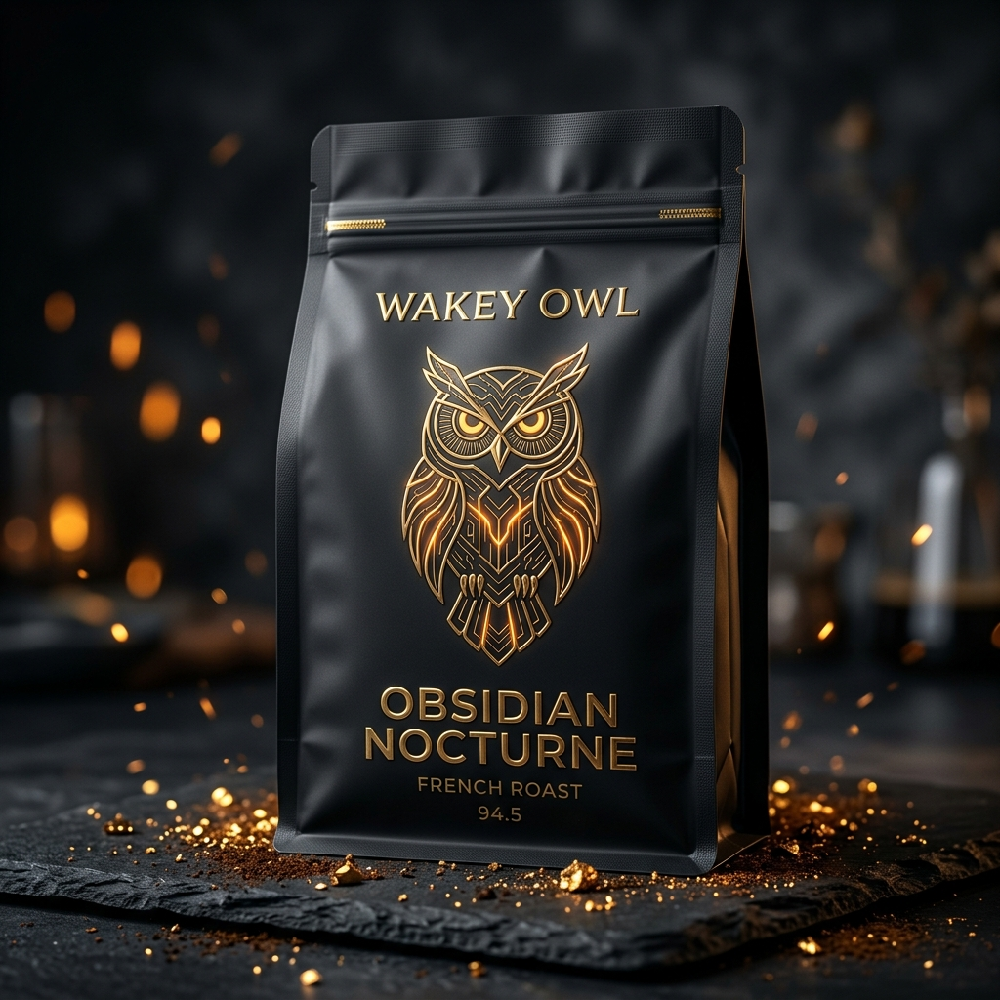
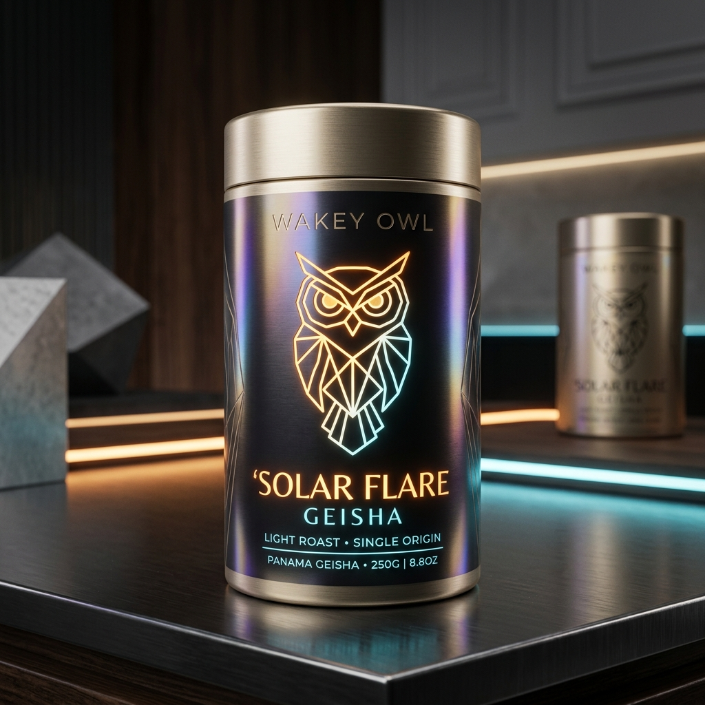
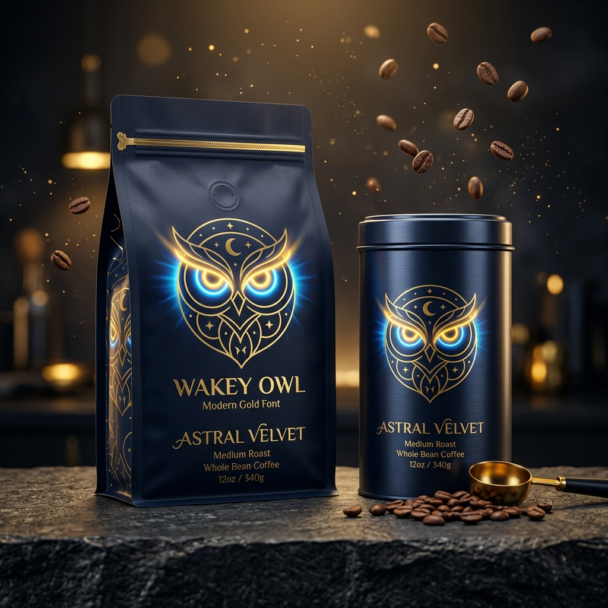

Single-Estate Case Studies
Deep-dive technical analyses into our Western Ghats micro-lots, fermentation biochemistry, and cryogenic roasting results.

Attikan Estate: 1,750m Extreme Elevation & Zero Bitterness
Hypothesis: Growing Arabica SLN 79.5 in the sub-zero nocturnal chill of the BR Hills wildlife sanctuary at 1,750m doubles the maturation cycle from 6 to 9 months, accumulating extreme sugar density (26° Brix).
Outcome: Spectrometry cupping verified zero harsh chlorogenic acid spikes. The slow caramelization yields rich 85% dark cacao and Mysore jaggery notes with an SCA cupping score of 94.8.
Ratnagiri: 72-Hour Anaerobic Yeast & Alphonso Mango Esters
Protocol: Ripe Chandragiri cherries were sealed in stainless steel bioreactors purged with carbon dioxide at 16°C for 72 hours, inoculating native fruit yeasts before slow drying on raised solar beds for 24 days.
Outcome: The resulting volatile aromatic compound profile revealed high concentrations of ethyl butyrate and linalool, creating the signature Alphonso mango and floral wild honey bouquet (SCA 95.2).


Araku Valley: Tribal Biodynamic Companion Planting
Model: Organic cultivation across indigenous smallholder tribal cooperatives in the Eastern Ghats. Intercropped with wild cardamom, black pepper, and fruit trees in mineral-rich red laterite soil with zero synthetic pesticides.
Outcome: 100% organic certification with exceptional natural cardamom nuances and silky body. Awarded top honors in Paris and Tokyo for direct-trade ethical luxury.